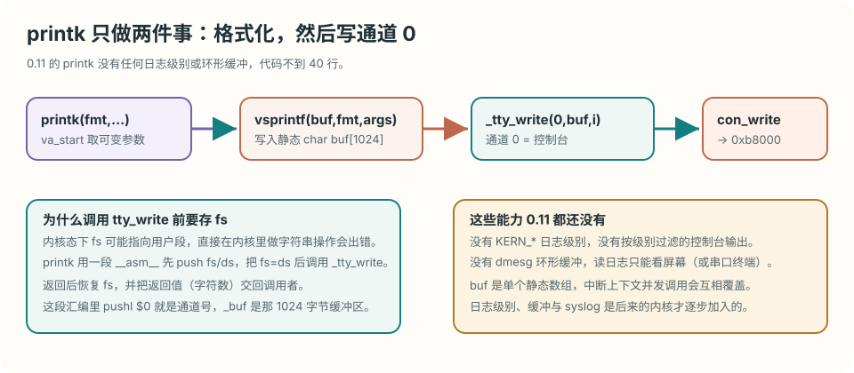
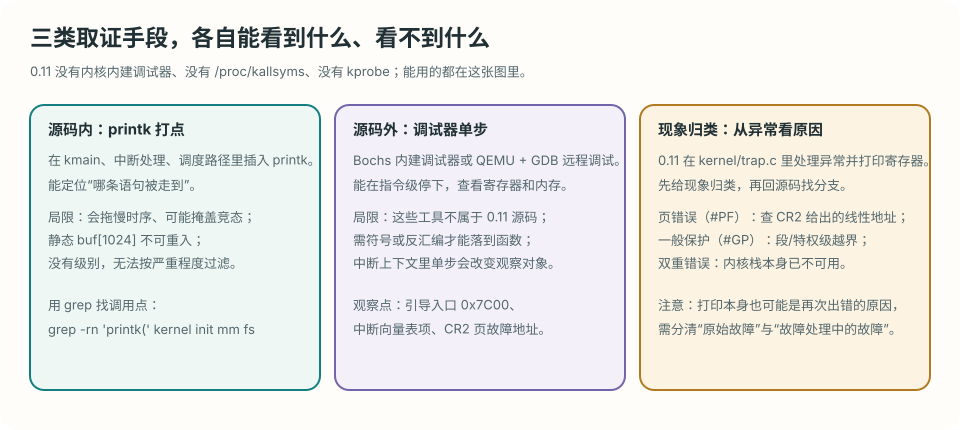

内核调试：printk、调试器与异常现场
这一章不虚构任何调试会话，而是说清 0.11 真正具备的三类取证手段：它们各自读到哪些寄存器与内存，又看不到什么。
调试 · printk / traps.c / 外部调试器内核里没有 printf，怎么取证？
用户程序出错时，你可以 printf、可以 gdb 挂到进程上。内核态不一样：fs 段寄存器此时可能指向某个用户的段，直接调用 C 库的字符串函数会把内核自身的指针解释错。0.11 也没有内核内建调试器、没有 /proc/kallsyms、没有 kprobe。这一章要回答的就是：在手头只有一台模拟器和源码的情况下，能做什么、不能做什么。
printk 的真实实现
kernel/printk.c 只有不到 40 行。它用 vsprintf 把格式化结果写入一个静态缓冲区，然后用一段内联汇编保存并重设 fs，再调用 _tty_write，通道号写死为 0（控制台）。在内核 C 层对应的调用形式就是 tty_write(0, buf, i)：第一个参数 0 是控制台通道，后两个依次是格式化缓冲区与字符数。
static char buf[1024];
int printk(const char *fmt, ...)
{
va_list args;
int i;
va_start(args, fmt);
i=vsprintf(buf,fmt,args);
va_end(args);
__asm__("push %%fs\n\t"
"push %%ds\n\t"
"pop %%fs\n\t"
"pushl %0\n\t"
"pushl $_buf\n\t"
"pushl $0\n\t"
"call _tty_write\n\t"
...
::"r" (i):"ax","cx","dx");
return i;
}三个细节值得记住：pushl $0 就是 tty_write 的通道参数 0；_buf 是一个单个静态数组，所以中断上下文与普通上下文同时调用 printk 会互相覆盖；返回的 i 是格式化后的字符数，不是“输出成功”的错误码。

con_write 写进显存。串口终端若要收到日志，需要在配置里把控制台指到串口。日志去了哪里，以及它的历史局限
因为 printk 只是往通道 0 写字符，所谓“看内核日志”就是看屏幕。0.11 没有日志级别前缀（现代内核的 KERN_ERR 等），也没有 dmesg 从环形缓冲区读取的能力；/dev/kmsg、syslog 接口和级别过滤都是后来才逐步加入的。把现代内核的 printk 语义直接套到 0.11 上，会得到错误的心智模型。
同类的历史错位还有键盘请求：0.11 既没有 Magic SysRq 组合键，也没有 /proc/sysrq-trigger 这类入口。内核一旦挂死，本章能用的仍是外部调试器或直接重启，并不存在“敲一个组合键让内核现场打印调用栈”的后门。
再往前一步看：bootsect.s、setup.s 在内核尚未就绪前用的是 BIOS 的显示中断或直接写显存，那时连 printk 都还不可用。因此“引导阶段的输出”与“内核运行后的输出”走的是两条不同的路径，不要混为一谈。
调试器与异常现场
当内核真的撞上异常，第一份证据来自 kernel/traps.c。它的 die() 把陷阱号和一组寄存器印出来；trap_init() 用 set_trap_gate 把 0～16 号向量挂到各自的处理函数上，页错误（#PF）则另走 mm/page.s。
/* traps.c */
static void die(char * str,long esp_ptr,long nr)
{
printk("%s: %04x\n\r",str,nr&0xffff);
printk("EIP:\t%04x:%p\nEFLAGS:\t%p\nESP:\t%04x:%p\n", ...);
...
}
/* page.s */
movl %cr2,%edx
pushl %edx
pushl %eax
call _do_no_page看到“general protection”或“page fault”时，先不要猜：die() 打印的 EIP/ESP 能告诉你是谁在哪条指令出错，而页错误额外给出源寄存器 CR2 中的线性地址——它是第 14 章里 do_no_page/do_wp_page 的分水岭。至于单步跟踪，0.11 本身不提供；你用的是 Bochs 内建调试器或 QEMU + GDB 这类外部工具，它们能在指令级停住、查内存，但不会告诉你内核逻辑意图。

printk 回答“走到了哪里”，调试器回答“寄存器此刻是什么”，异常打印回答“发生了什么类型的故障”。为什么 printk 的静态缓冲区会带来风险？（展开核对）
因为 buf[1024] 不属于任何任务，也未被锁保护。若在时钟中断或键盘中断处理中调用 printk，而被打断的上下文正好也在格式化字符串，两者就会写同一块内存。这是“观察本身改变系统”的一个具体例子。
只读验证与正确边界
在 v0.11 源码根目录执行：
grep -n 'vsprintf\|_tty_write\|char buf' kernel/printk.c
grep -n 'static void die\|void trap_init\|set_trap_gate(14' kernel/traps.c
grep -n '%cr2\|do_no_page\|do_wp_page' mm/page.s预期分别找到格式化与写通道、陷阱入口与页错误向量、以及从 CR2 取得地址再分派的代码。这是源码静态实验：本章未运行 Bochs/QEMU、未触发任何一次真实异常，也不声称打印出的寄存器值与某台机器一致。调试器命令与模拟器版本相关，应以你本地工具的手册为准。
原始资料与下一章
- kernel/printk.c：printk、静态 buf[1024]、_tty_write 通道 0。
- kernel/traps.c：die、trap_init 与各路异常处理。
- mm/page.s：页错误入口与 CR2。
- kernel/chr_drv/tty_io.c：打印最终进入的 tty_write。
看清了“怎么观察”，还差“怎么亲手停住它”。下一章把 QEMU 与 GDB 连起来，把系统调用全程跟一遍。